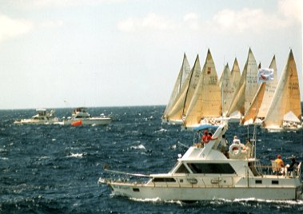

6m Today

Honolulu Hawaii
TIME:UTC(JST-9:00)
【Back Issues Jun.99】
30.Jun.99
(10:00-c)
BY-TV 00:00- 49.750 --
VK-TV 03:00 46.172 --
VK-TV 09:20- 46.240 --
VK4ABW 09:59 50.110 CW "CQ RST 579"
◎ 今日は49.750MHzのTVのバズも聞こえない静かな6mバンド。 弱いVK-TVがしている。
◎ 6月2日のこの欄でお知らせしたJG5PJJ・近森さんによるモンゴルからの運用の詳細が次の様に発表さ
れた。 コールサインはJT1FBX。 近森さんはウランバートルのクラブ局・JT1KAAのメンバーなのでこの
局からの運用も予定。(TNX JA5CMO)
期 間：7月6日-14日及び8月20-27日
時 間：07:00-09:00JST及び19:00-22:00JST (注)休日はこの時間以外にも運用
周波数：50.110MHz(SSBが主力)
RIG & ANT：IC-706(10W)+4EL HB9CV
QSL：Home QTH
 6mがらみのDX-Pedi(一部運用中) [Feedback] JAから伝搬があると思われるもののみ掲載
** T30JH(W.Kiribati) 24.Jun-04.Jul HF & 6m OP.VK2GJH [QSL Home QTH]
** JT1FBX(Mongolia) 06.Jul-14.Jul 15m & 6m OP.JG5PJJ [QSL Home QTH]
** 9V1UV(Singapole) 17.Jul-18.Jul 6m OP.9V1UV [QSL Home QTH]
** 9V1UV(Singapole) 24.Jul-25.Jul 6m OP.9V1UV [QSL Home QTH]
** T88(Palau) 20.Jul-25.Jul 80m-6m OP.T88JR=JH3FJG.T88DX=JI3DLI
T88KS=JA3AQM [QSL Home QTH]
6m=50.090(CW).50.115(SSB)
** WH0/WH2M(N.Marianas) 22.Jul-29.Jul HF & 6m OP.JE7RJZ & Members of JA7YCE
[QSL via JA7FWR]
+ FO(French Polynesia) 19.May-13.Aug HF & 6m OP.FO0CLA=F2HE [QSL via F6LQJ]
(Maruquesas &
Austral Is)
** JT1FBX(Mongolia) 20.Aug-27.Aug 15m & 6m OP.JG5PJJ [QSL Home QTH] 6mがらみのDX-Pedi(一部運用中) [Feedback] JAから伝搬があると思われるもののみ掲載
** T30JH(W.Kiribati) 24.Jun-04.Jul HF & 6m OP.VK2GJH [QSL Home QTH]
** JT1FBX(Mongolia) 06.Jul-14.Jul 15m & 6m OP.JG5PJJ [QSL Home QTH]
** 9V1UV(Singapole) 17.Jul-18.Jul 6m OP.9V1UV [QSL Home QTH]
** 9V1UV(Singapole) 24.Jul-25.Jul 6m OP.9V1UV [QSL Home QTH]
** T88(Palau) 20.Jul-25.Jul 80m-6m OP.T88JR=JH3FJG.T88DX=JI3DLI
T88KS=JA3AQM [QSL Home QTH]
6m=50.090(CW).50.115(SSB)
** WH0/WH2M(N.Marianas) 22.Jul-29.Jul HF & 6m OP.JE7RJZ & Members of JA7YCE
[QSL via JA7FWR]
+ FO(French Polynesia) 19.May-13.Aug HF & 6m OP.FO0CLA=F2HE [QSL via F6LQJ]
(Maruquesas &
Austral Is)
** JT1FBX(Mongolia) 20.Aug-27.Aug 15m & 6m OP.JG5PJJ [QSL Home QTH]
[解説] ****=確実！ ***=まず大丈夫！ **=難しいがもしかしたら？ *=沖縄なら？ ＋=参考
|
29.Jun.99
(15:00-e)
BY-TV 00:00- 49.750 --
VR2XMT 00:33 50.110 SSB
DS4CNB 01:56 50.110 CW/SSB
VR2LC 02:23 50.110 SSB
VK-TV 09:00- 46.172 --
UN3G 13:30 50.110 CW
◎ 午前中から昨日同様、西方向の強力なTVのバズと共にJR6(沖縄)、VR2、HLが入感。 夕方には一時的に
このバズは低下、入れ替わる様に46MHz帯のVK-TVが入感していた。
今日も13:30z頃から30分ほどUN3Gが聞こえてきたが、信号は昨日よりも弱かった。
◎ T30JHからの運用を予定していたVK2GJH・Jackは、現在C21JHのコールサインでナウルからQRVしている。
V73ATなどとQSOしているが、Esシーズンのこの時期はJAとのQSOは難しい？。 運用は7月8日まで。
28.Jun.99
(14:00-d)
BY-TV 00:00- 49.750 --
DS4CNB 09:18 50.130 CW/SSB
HL5TP 09:22 50.115 CW
UN3G 13:10 50.110 CW
◎ 午前中は弱い沖縄のビーコン(JR6YAG)が聞こえている程度で昨日のようなDXの入感はなかった。
夕方の"ヨーロッパ狙い"のCQ DXに応答してくるのは、"それ"とは知らずに？呼んでくるHLだけ。
13:10zに50.110MHzでCQを出してきたUN3Gは、パイルアップになることもなく"CQ"の連続だったが、
10分程で聞こえなくなった。
◎ 9V1UV・Selvaは、7月17-18日と7月24-25日の両期間、6mの運用許可を得て再QRVを予定している。
27.Jun.99
(13:00-e)
BY-TV 00:00- 49.750 --
BA7JG 00:25 50.120 SSB
WH7C/DU3 00:28 50.135 SSB
BG7OH 00:28 50.150 SSB
VR2ZYW 00:29 50.162 SSB
VR2LC 00:33 50.104/170 CW/SSB
VR2XMT 00:39 50.115 SSB
VR2ZGC 00:41 50.135 SSB
VR2YSS 00:48 50.180 SSB
VR2ZLP 01:38 50.140 SSB
BV/JP1RIW 01:42 50.122 SSB
BV/JH3GCN 02:21 50.116 CW
HL5XF 02:28 50.120 SSB
VR2IL 02:29 50.125 SSB
DS4CNB 03:18 50.110 CW
VR2XMQ 04:00 50.110 SSB
HL1LTC 04:03 50.110/130 SSB
KL7FZ 06:03 50.110 CW
(AL7OB 06:17 50.120 CW)
KL7Y 06:50 50.105 CW/SSB
AL7OB 07:40 50.120 SSB
◎ 早朝からJR6、JA6など西方向の国内Esと共に、3.000Km以内の近場のDXが強力に入感。 午後になっ
て北方向(JA8)のEsが上昇、06:00z頃から約2時間KL7'sが入感した。
26.Jun.99
(15:00-g)
BY-TV 00:00- 49.750 --
HL3ERJ 06:34 50.180 SSB
HL2DJW 08:56 50.105 CW
HL1/JI1EFP 09:13 50.140 CW
VR2XMT 14:10 50.110/115 SSB
◎ 昨日のKL7'sの入感で週末の北米方面のオープンも期待されたが、この時間帯まで入感は確認され
ていない。 西方向からのTVのバズも強力に入感しているが、聞こえているDXはHL'sだけ。
◎ スリランカの4S7YSG・佐竹さんからの連絡によると、3月に6mにQRVしたものの、QRV直後にアパー
トに設置されている48MHzのCATVに混信を与えるという理由で一時6mの運用を控えていたが、最近にな
ってCATVの周波数が48MHz帯から231MHz帯にQSY、再び自宅からのQRVが可能になったとのこと。
この間、佐竹さんは4S7EAのシャックから6mを運用してJAともQSOしていたが、"問題解決"でさっそく
自宅にHB9CVを再設営、最近購入したIC-706でJAとのQSOをねらっている。
25.Jun.99
(14:00-e)
BY-TV 00:00- 49.750 --
HL5XF 01:39 50.130 SSB
KL7IKV 04:48 50.110/105 CW
KL7XX 05:33 50.110 CW
NL7Z 05:56 50.130 CW
KL0IW 06:15 50.106 SSB
KL7ZZ 06:30 50.150 CW
AL7PJ 06:31 50.120 SSB
*KL7ZZ 07:13 50.150 SSB
KH0/JN3AHZ 08:44 50.114 CW
T88GN 08:48 50.120 SSB George
BV2NT 09:30 50.200 SSB
◎ 04:45z頃からKL7'sが入感、全般的に信号は弱いがエリアに関係なく広範囲にオープンしていた。
"昨日の今日"で、まだKL7が入感している08:00z前から"ヨーロッパ狙い"のCQが50.110MHz付近で聞こ
えていた。 西方向からのTVのバズが強力なので弱いヨーロッパの信号の受信には苦労させられそう。
24.Jun.99
(15:00-b)
BY-TV 14:00 49.750 --
HL1LTC 14:52 50.110 CW
(KL7IKV 04:57 50.108 CW JA0)
(VE7XF 05:27 50.103 CW JA3)
◎ 既にクラスターなどでご承知の通り、6月19日から24日にかけてW、VE7、KL7やUN3G、JT1TCRなどの
入感で賑わっている。 23日のOH7とのQSOに続き、24日にはSP、SM、OZ、DKなどヨーロッパからもJAの
信号の受信がリポートされている。 UN3Gは21日と22日のオープンで98局のJA'sとQSOしたと。
◎ サイパン滞在期間中の6月23日早朝(深夜?)の02:00-03:00JST頃にJA'sがオープン、JA2IGY(三重)や
JA6YBR(宮崎)のビーコンも04:00JST頃までかなり強力に聞こえていた。 "こんな時間"にも関わらず数
局のJA'sが応答してきた。
◎ 6月21日から23日までKH0(サイパン)滞在のため1エリアからのリポートは休止。
23.Jun.99
(00:00-a)
(OH7PI 08:50 50.110 CW JA1.0)
(UN3G 08:55 50.110 CW JA1.2.7.0 etc.)
20.Jun.99
(04:00-c)
BY-TV 00:00- 49.750 --
(W7XU 00:04 50.115 SSB JH6NKZ)
(UN3G 14:10 50.110 CW JA2)
(UR5ZEL 15:32 50.108 CW JF6EZY)
◎ JH6NKZからW7XUとのQSOがクラスターにリポートされている。 このリポートの後、VE9AA(FN65RR)
から01:15zにJA4MBMのCQを50.110MHzで1分間受信したとのリポートも報告されている。 この時間に
CQを出しているJA4MBMの信号は、JA1でも確認しているのでこの電波が届いていた可能性は十分に考
えられる。 この週末は"SMIRK QSO Party"が行われているので、北米の6mのアクティビティは上がっ
ている。 尚、6月19日の06:20zにJF2HEVはW7EWをRST529で受信したとの事。 マルチホップEsでの北
米は今季初。
21.Jun-23.Jun.99
(00:00-a)
◎ 6月21日から23日まで、このコーナーのリポートはお休みさせて頂きます。
この間は"KH2K/AH0のリポート"をSaipanからお送りします。
19.Jun.99
(13:00-d)
BY-TV 00:00- 49.750 --
9M-TV 00:00- 48.240/260 --
BV/JH3GCN 00:42 50.111 CW
BV2NT 01:25 50.110/120 SSB
BV2PU 03:00 50.120 SSB
*BV/JH3GCN 03:27 50.115 SSB
BV/JP1RIW 05:32 50.115 SSB
BV2KS 06:17 50.110 SSB
VR2XMT 07:37 50.110 SSB
9M2TO 08:59 50.132 CW
◎ 午前中から西方向の強力なEsで近場のDXがオープン。 夕方から9M2TOの"CQ"が聞こえていたが、
JA'sのコールに応答する事もなく"CQ"の出し続けだった。 相変わらずローカルのTVの妨害を受けて
いるものと思われる。
18.Jun.99
(10:00-c)
BY-TV 00:00- 49.750
9M-TV 00:00- 48.240/260
VR2XMT 00:30 50.115 SSB
BV2NT 00:34 50.120 SSB
VR2ZNY 00:46 50.110 SSB
HL5XF 01:37 50.130 SSB
VR2LC 01:38 50.140 SSB
VR2ZGC 03:08 50.110 SSB
◎ 昨日同様、朝から西方向(JR6、JA6)の国内Esが強力。 これと共にVR2、BV、HLなどの近場のDXも強
力に入感していた。 夕方にサテライト(AO-10)でQSOしたVR2XMT・Charleiからの情報によると、彼は
今日だけで100局以上のJA'sとQSOしたと。 "休日"だったホンコンでは多くの局がQRVしていたもよう。
17.Jun.99
(14:00-d)
BY-TV 00:00- 49.750 --
9M-TV 00:00- 48.240/260 --
VR2YRC 00:10 50.120 SSB
VR2JK 00:15 50.104/110 CW/SSB
VR2UP 00:52 50.110 SSB
BV2NT 01:37 50.120 SSB
BA7JG 01:44 50.120 SSB
JD1BIA 03:36 50.110/120 SSB
BG7OH 03:49 50.110/120 SSB
BV3FQ 03:54 50.110 SSB
HL5XF 03:58 50.140 SSB
P5-BC 07:15- 48.250 AM 9.650MHz×5(Pyongyang日本語放送)
VR2XMT 13:45 50.110 SSB
◎ 午前中から西方向(JR6、JA6、5)のEsと、近場のDXが強力に入感した。
16.Jun.99
(14:00-c)
BY-TV 00:00- 49.750 --
9M-TV 03:00- 48.240/260 --
BV2NT 11:05 50.110 SSB
◎ 午前中から西方向のTVが入感していたが、DXは近場の"常連"のみ。
15.Jun.99
(14:00-c)
BY-TV 00:00- 49.750 --
9M-TV 08:00- 48.24/25/26 -
VK4RIK 09:35- 52.445 CW Beacon
◎ 午前中に49MHz帯のTVが入感していたものの、午後はTVの入感もなく静かな6m。 夕方から南西方向
のTVが上昇してきた。
14.Jun.99
(15:00-d)
BY-TV 23:00- 49.750 --
9M-TV 00:00- 48.240/260 --
XW8KPL/CSN 02:25 50.105 SSB/CW QSX 50.135MHz
(KF4VSV/KH0 08:05 50.110 CW JA2)
VK4RIK 09:10- 52.445 CW Beacon
KH0/JR2XKV 09:27 50.110 SSB
VQ9ZZ 14:35 50.110 CW
◎ 昨日同様、午前中から西方向からのTVが強力。 XW8KPL/CSNも02:00過ぎに入感してきた。 1エリア
では02:30z前後に良く聞こえていたが、04:30z頃にはコンデションが変わってしまった。
深夜に入感したVQ9ZZは1エリアでは弱かった。
13.Jun.99
(13:00-e)
BY-TV 00:00- 49.750 --
9M-TV 00:45- 48.240/260 --
VR2ZYW 00:46 50.130 SSB
BG7OH 00:48 50.135/120 SSB
VR2LC 00:53 50.104 CW
VR2XMT 00:57 50.120 SSB
VR2ZUC 00:59 50.140 SSB
HL5XF 01:01 50.120 SSB
HL3IUA 01:08 50.115 SSB
DS5JQK 01:50 50.110 SSB
HL5TP 01:58 50.110/135 SSB
DS5IJG 02:09 50.130 SSB
XW8KPL/CSN 03:00 50.105 CW/SSB
*XW8KPL/CSN 04:28 50.105 SSB QSX 50.140MHz
(GM4COK/DU1 04:30 50.140 SSB He heard JA pilup)
9M2/JI1ETU 04:55 50.130 SSB
*XW8KLP/CSN 05:00 50.105 CW
(9V1UV 05:15 50.115 SSB JA1.2 weak)
VR2JK 05:34 50.109 CW
BV2NT 05:34 50.120 SSB
HL1/JI1EFP 05:37 50.134 CW
◎ 朝からEsによる広範囲な国内のオープンに混じってVR2、HL、BG7などのDXが入感。 03:00z少し前
からXW8KPL/CSNがCWで入感してきた。 信号は強力で03:26zからSSBに替わりJA'sのパイルを捌いてい
た。 当初、UPの指定が数KHzだったため、04:30zにQSX 50.140MHzに変更されるまでは50.110MHz付近
はJA'sのパイルで完全にマスクされてしまった。
このXW8のオープンから間もない05:15z頃から50.115MHzで9V1UVが入感してきた。 9V1UV・Selvaか
らの報告では、このオープンでJA1、2エリアなど12局とQSO出来たと。
12.Jun.99
(16:00-e)
BY-TV 00:00 49.750 --
VR2XMT 00:07 50.115 SSB
BV2B 01:54 50.110 SSB
9M-TV 06:00- 48.240/260 --
DS1GQS 06:00 50.160 SSB
BG7OH 06:04 50.135 SSB
HL5XF 06:05 50.130 SSB
VR2LC 06:05 50.115 CW
DS5IJG 06:08 50.120 SSB
*BG7OH 09:10 50.110 SSB
*VR2LC 09:29 50.104 CW
VR2YRC 09:33 50.140 SSB
VQ9ZZ 14:45 50.110 CW/SSB
HL1LTC 15:34 50.110 SSB
◎ 久しぶりに午前中からVR2/BV/HL/BGなどの"近場"のDXの入感が終日続いた。 48MHz帯の9M-TVも強力
で、XW8など東南アジア方面の入感も期待されたが、現時点ではまだ入感リポートは無い。
◎ Georgiaの4L5Oがアクティブに6mでQRVしている。 今日は07:00z前後にヨーロッパとのQSOがリポー
トされているが、この時間帯にJAにもアンテナを向けていると。
11.Jun.99
(13:00-d)
V73JK 07:49 50.110 CW
V73SIX 07:50- 50.014 CW
BV2PU 08:59 50.110/120 CW/SSB
BV4QI 09:29 50.110 SSB
◎ "今日も日中はTVの入感もなく静かな6m"が、決まり文句になりそうな最近の6mのDXコンデションだ
が、Esシーズンの夏場のこの時期は、マルチホップEs以外はこれといっためぼしいDXのパスは望めない。
夏場のマルチホップのEs伝搬と言うと北米方面が一般的だが、サンスポットが上昇している時期には、
西方向からのオープンも期待出来る。 前サイクルのピーク時だった1992年7月26日にYU3ZV、DL7AV、
OK1MACなどのヨーロッパが09:00z(18:00JST)頃から一時間ほど入感した事がある。 ただ、一サイクル
に何度もあるパスでは無いので、このチャンスに出合うのには"強運"も必要かも知れない。
10.Jun.99
(14:00-c)
BY-TV 01:00- 49.750 --
BV2PU 07:45 50.110 CW
BV2DP 08:24 50.110 CW/SSB
BV2NT 08:46 50.110 SSB
*BV2PU 09:38 50.110/160 SSB
BD7IA 09:44 50.109 CW
VR2XMT 10:40 50.110 SSB
◎ 夕方から北方向(JA8)のEsと、南西方向からのBV'sが同時に入感。
09.Jun.99
(14:00-c)
BY-TV 01:00- 49.750 --
VK-TV 07:30- 46.172 --
HL1LTC 07:57 50.110/125 SSB
◎ 今日は午前中から49.750MHzが入感していたが、コンデションは相変わらず"悪い"。
19:00z頃(日本時間の9日04:00JST頃)に南米PYとヨーロッパ中部が"大オープン"していた様なので、世
界的にコンデションが悪い訳ではなさそう。 この"パス"の時間と位置関係を単純に日本に置き換えて
比較すると「インド洋中部」になるのだが、残念ながらJAからQSOの出来そうなアクティブなエンティ
ティーはこの辺りには見当らない。
08.Jun.99
(14:00-c)
BY-TV 11:00- 49.750 --
◎ 日中は49.750MHzのTVの入感もない、静かな6m。
◎ Maruquesas IsからFO0CLA(op F2HE)がHF帯でアクティブにQRVしている。"Slow CW"のHF帯の捌きは
DX Pediの局としては"スマート"さはないが、ぜひ6mで聞いてみたい信号。
◎ VK0YQS/9でLord Howe島からQRVしていたDougは結局、以前使っていたVK9YQSのコールサインでこの
島からQRVすることになった。 滞在期間は一年間。 "VK9"のコールサインになったらアクティブにQRV
したいとの事だったので、秋のDXシーズンには期待出来そう。
VK0のMacquarieでは"VK9YQS/0"、VK9のLord Howeでは"VK0YQS/9"と、JAとQSOする時にはいつも"/"付
きの0、9反対のコールサインだったので今度は"すっきり"する？。
VK9YQSのQSLは、Po.Box 86 Lord Howe Is 2898 Australia.
07.Jun.99
(13:00-c)
BY-TV 01:00- 49.750 --
◎ 午前中に入感していた49.750MHzのTVも昼過ぎには落ちてしまった。 国内のEsもなく静かな6m。
台風3号がホンコンを直撃している。
◎ 6月1日から始まったTCP(テレコムQSOパーティー)も今日が最終日(7日24:00JSTまで)。
今回から7桁の郵便番号になり、CWで参加すると10桁の数字の羅列となり送受には少し"緊張"？する。
残念ながら今回は6mでの参加者は少なかった。
06.Jun.99
(14:00-g)
BY-TV 01:30- 49.750 --
HL1/JI1EFP 01:37 50.125 CW
VR2XMT 01:42 50.110/120 SSB
BU0DX/1 01:43 50.116 SSB
BV4QI 03:12 50.115 SSB
9M-TV 03:00- 48.240/260 --
HL3EPH 05:00 50.141 SSB
HL3AOA 05:21 50.252 SSB
HL1QW 05:26 50.203 SSB
KH0/JA4RED 08:17 50.110 CW Beacon only?
AA1NY/KH0 08:29 50.110 CW
VK8VF 13:29- 50.057 CW Beacon
◎ 朝からHL、BV、VR2が、国内のJA4、5、6と同時に良く入感していた。
◎ 来週末に予定されているLaosのXW8KPL/CSNの運用周波数が変更された。 同じ日程、周波数で運用
する9V1UVに配慮したもの。 新周波数は、Beacon=50.105MHz、QSX=50.135MHz and UP。
尚、9V1UVは08:14-08:21zにJE7YNQ(50.027MHz)のビーコンを受信している。
05.Jun.99
(15:00-f)
BY-TV 00:00 49.750 --
KH0/JH4RLY 00:39 50.115 SSB
BV2B 01:20 50.120 SSB
KH0/JA4RED 01:36 50.110 SSB
HL5XF 02:06 50.130 SSB
VR2HK 03:22 50.110 SSB
VR2TWO 03:30 50.115 SSB
BU0DX/1 03:37 50.113 SSB QSL BV Buro
BV4SF 04:44 50.165 SSB
BV0TY 05:15 50.120 SSB
VQ9ZZ 14:42 50.110 CW
◎ 朝からKH0/JH4RLY & KH0/JA4RED、BV2's、VR2'sが強力に入感。 特にBVは144MHz帯でもオープン。
02:00z頃に28.885MHzにQRVしてきた9V1UV・SelvaがJAとクロスバンドでトライしていたが、この時間
は9V→JAのパスは無い。 夜は"定期便"となったVQ9が今日も入感。
◎ 青森県三沢市からアクティブにQRVしている7J1AEJ/1(ex KG6DX)・Joeのコールサインが7J7ADBに変
更になった。 50Wの移動局から200Wの固定局に変更されたため。
04.Jun.99
(15:00-d)
BY-TV 23:00- 49.750 --
VK-TV 07:55- 46.172 --
ZL-TV 07:55- 45.240/260 --
VQ9VK 14:40 50.110 CW
◎ 日中のコンデションの落ち込みが嘘のように、深夜近くなって入感するVQ9は良く聞こえている。
◎ KH0(Saipan)からAA1NY、JA4RED、JH4RLYの各局がQRVを始めた。 50.110MHzで"CQ Beacon"を出し
ている。 運用は6日まで。
◎ 6月12日から6mの運用を予定している9V1UV・Selvaから、沖縄のJR6YAG(50.037MHz)の受信リポート
(4日=10:05z)がクラスターに報告されている。 Selvaの「10Wと4el」の電波がJAに届くのを"期待"し
たい。
03.Jun.99
(14:00-c)
BY-TV 22:00- 49.750 --
◎ ここ2、3日のSSN、SFは共に急上昇しているが、DXシーズンを過ぎたこの時期では6mのコンデショ
ンを"劇的"に変化させる事はない？。 夜間にまだVQ9が入感しているのが唯一の"恩恵"かも。
今日も日中はEsの発生もなく静か。
◎ 9V(Singapore)から6mの運用が予定されている。 9V1UV・Selvaは"郵政当局"から正式に運用許可を
得て、来週末の6月12日(18:00z)から14日(03:00z)に6mにQRVする。
運用周波数は50.115MHz、使用RIGはYAESUのFT-736R(10W)+4el。
◎ LaosからXW8KPL/CSNのコールサインでJA局(7L1MFS.JA2MNB.JR2KDN)による運用が予定されている。
運用周波数は50.115MHz、QSX 50.125MHz or UP。 使用RIGはIC-706MK2+5el。(TNX JF2MBF)
02.Jun.99
(15:00-c)
VK-TV 01:20- 46.172 --
BY-TV 01:20- 49.750 --
VR2LC 01:20 50.110 CW
9M-TV 08:00- 48.240/260 --
VK-TV 08:00- 46.172 --
VK4JH 09:07 50.110 CW
VK8RAS 09:14- 50.057 CW Beacon
VQ9VK 14:20 50.110 CW
◎ 日中は強力な国内のEsの発生もない静かな6m。 夕方になってVKの北部がオープン。
14:20z頃から入感してきたVQ9VKは1エリアでも良く聞こえていたが、コールするJAは少なくCQを出し
続けていた。 呼ばれなくなったためか14:44zにはQRT？した。
クラスターには北米間のEsのQSOが連日リポートされる様になった。 今年の北米→JA間のマルチホ
ップのEsが発生するのが待ち遠しいが、JAから北方向のEsはまだ弱い？。
◎ JT1(Mongolia)からJT1FBXがQRVを予定している。 JT1FBXは仕事でウランバートル市に滞在してい
るJG5PJJ・近森さんによる運用。 使用RIGはIC-706(10W)+2EL HB9CVで8月27日頃までQRVする。
周波数は50.110MHz(SSB)。 近森さんはウランバートルのクラブ局・JT1KAAのメンバーなのでこの局か
らの運用も予定。(TNX JA5CMO)
01.Jun.99
(12:00-c)
BY-TV 01:00- 49.750 --
9M-TV 02:00- 48.240/260 --
BG7OH 04:04 50.110/140 SSB
VR2JK 04:11 50.110/104 CW
HL5XF 04:26 50.110 CW
BV2SR 04:58 50.110 CW
BV2PU 05:44 50.110 SSB
◎ 沖縄(JR6YAG=50.036MHz)のビーコンが強力。 04:00z頃からVR2/BG7の3,000Km圏が入感開始。
夕方は北方向(北海道)のEsがオープン。

 |
Okinawa '99 JA1RJU/6 (沖縄) |
| Index | Back Issues |
 |
最新情報へ戻る |
 Sub Indexへ
Sub Indexへ